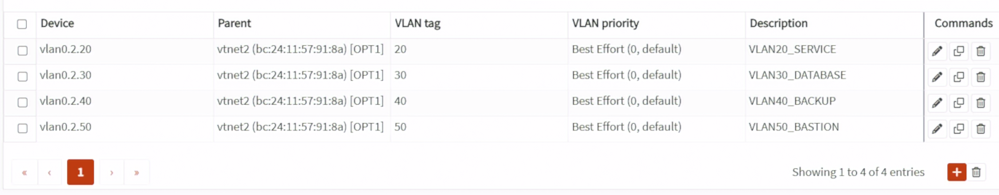
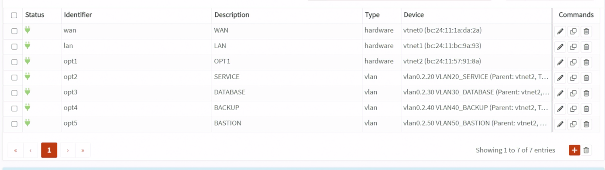
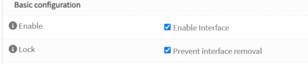
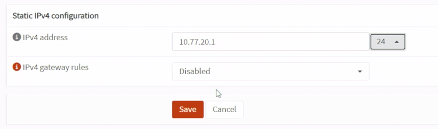
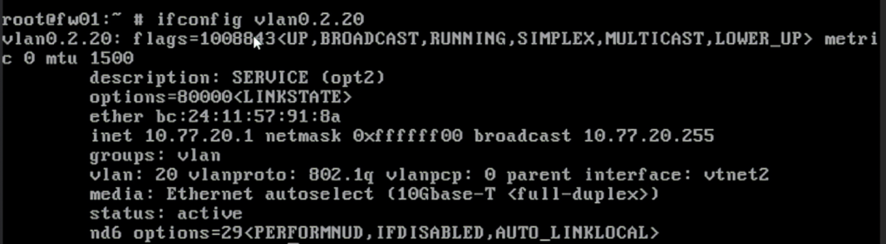
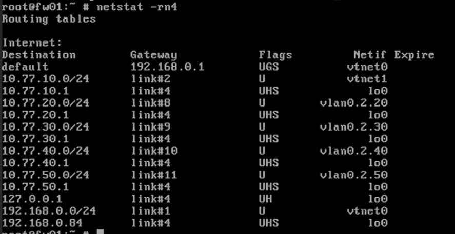

Day 13｜從 VLAN 到安全區域：802.1Q、跨網段路由與 OPNsense 介面
對應文章：Day 13｜從 VLAN 到安全區域：802.1Q、跨網段路由與 OPNsense 介面
本日讓 OPNsense 的 vtnet2 承載 VLAN 20～50。Management 使用獨立 vtnet1，不在 Trunk 上重複建立 VLAN 10。
本日實際變更範圍
Day 13 實際只修改 OPNsense：
- 在父介面
vtnet2建立 VLAN 20、30、40、50 裝置。 - 將四個 VLAN 裝置指派並啟用為 SERVICE、DATABASE、BACKUP、BASTION 介面。
- 設定四個介面的靜態 IPv4 位址，讓
IPv4 gateway rules維持Disabled，並且不啟用 DHCP 服務。 - 驗證四條直接連線路由並下載
config.xml備份。
今天不建立或修改服務 VM，不建立介面群組（Interface Group），也不新增暫時或正式防火牆規則。下方的 VM VLAN 清單只記錄後續部署日要套用的設定。
1. 建立 VLAN 裝置
到 Interfaces → Devices → VLAN，按 Add。OPNsense 26.7 的裝置名稱（Device）欄位不能留白，也不能只填 VLAN ID。名稱最多 15 個字元，必須以 vlan0 開頭，後面只能使用數字與句點，例如 vlan0.1.104。不符合時會顯示：
The device name prefix "vlan" is required.
Only a maximum of 15 characters is allowed starting with "vlan0" combined with numeric characters and dots.
依序建立四個 VLAN 裝置：
- Service VLAN：Device 填
vlan0.2.20、Parent 選vtnet2、VLAN tag 填20、Description 填VLAN20_SERVICE。 - Database VLAN：Device 填
vlan0.2.30、Parent 選vtnet2、VLAN tag 填30、Description 填VLAN30_DATABASE。 - Backup VLAN：Device 填
vlan0.2.40、Parent 選vtnet2、VLAN tag 填40、Description 填VLAN40_BACKUP。 - Bastion VLAN：Device 填
vlan0.2.50、Parent 選vtnet2、VLAN tag 填50、Description 填VLAN50_BASTION。
每建立一項就核對 Device、Parent 與 Tag，再按 Save。不要在 Parent vtnet2 本身配置 IP，也不要建立 vlan10；Management 已由獨立的 vtnet1 負責。

圖（一）確認 VLAN 20～50 的裝置名稱、父介面與 VLAN Tag。
2. 指派介面
到 Interfaces → Assignments，將四個 VLAN 裝置加入並改名：
- 將
vlan0.2.20加入，Description／Interface Name 使用SERVICE，IPv4 Static Address 設為10.77.20.1/24。 - 將
vlan0.2.30加入，Description／Interface Name 使用DATABASE，IPv4 Static Address 設為10.77.30.1/24。 - 將
vlan0.2.40加入，Description／Interface Name 使用BACKUP，IPv4 Static Address 設為10.77.40.1/24。 - 將
vlan0.2.50加入，Description／Interface Name 使用BASTION，IPv4 Static Address 設為10.77.50.1/24。
四個介面均不啟用 DHCP 服務。

圖（二）將四個 VLAN 裝置指派為 OPNsense 介面。
每個介面：
- 勾選 Enable Interface。
- IPv4 Configuration Type 選 Static IPv4。
- 填入前面指定的
10.77.20.1/24、10.77.30.1/24、10.77.40.1/24或10.77.50.1/24。 IPv4 gateway rules維持Disabled，上游閘道由 WAN 負責。- 取消內部介面的 Block private networks／Block bogon networks。
- Save；四個都完成後 Apply Changes。

圖（三）啟用 VLAN 介面。

圖（四）設定 VLAN 介面的靜態 IPv4 位址，並讓 IPv4 gateway rules 維持 Disabled。
3. 記錄未來 VM 的 VLAN 配置
Day 13 尚未建立服務 VM，本節只記錄後續配置，不進入 PVE 建立或修改任何 VM，也不執行 qm set。
等各服務進入自己的部署日後，VM 的主要網卡（NIC）才接到 L1 vmbr1，並依用途設定 VLAN Tag：
- proxy01／proxy02，VMID 201／202：VLAN Tag
20。 - app01／app02，VMID 211／212：VLAN Tag
20。 - pg01～pg03，VMID 221～223：VLAN Tag
30。 - ca01，VMID 224：VLAN Tag
30。 - jump01，VMID 231：VLAN Tag
50。 - client01，VMID 241：VLAN Tag
20。 - monitor01，VMID 251：VLAN Tag
20。 - backup01，VMID 261：VLAN Tag
40。 - pg-restore01，VMID 904：VLAN Tag
30；只在 PITR 演練期間建立，不加入 Patroni／etcd。
服務 VM 預設只接一張網卡。不要為了讓 Database 與 Backup 互通而替 VM 加第二張跨區網卡。
實際執行時間：
- Day 15 建立 jump01 時設定 VLAN 50。
- Day 19 建立 ca01、Day 20 建立 PostgreSQL 節點時都使用 VLAN 30。ca01 使用
10.77.30.10，pg01～03 使用10.77.30.11～.13。
ca01 與 PostgreSQL 節點同在 VLAN 30，兩者的封包不一定經過 OPNsense。Day 19 會在 ca01 建立 nftables 主機防火牆（Host Firewall）；正式環境建議將線上中繼 CA（Online Intermediate CA）放到獨立的 PKI／Security VLAN。
- Day 25 建立 Proxy、Web Backend 與 client01 時設定 VLAN 20。
- Day 28 建立 backup01 時設定 VLAN 40，建立臨時 pg-restore01 時設定 VLAN 30。
- Day 16 提前建立 monitor01 SSH 基線時設定 VLAN 20；Day 29 沿用同一台 VM 安裝監控服務。
4. 確認 OPNsense VLAN 介面
今天只確認 OPNsense 本身的介面與直接連線路由（Connected Route），不測試尚未存在的 VM。
- 到
Interfaces→Overview。 - 確認 SERVICE 已啟用，位址為
10.77.20.1/24。 - 確認 DATABASE 已啟用，位址為
10.77.30.1/24。 - 確認 BACKUP 已啟用，位址為
10.77.40.1/24。 - 確認 BASTION 已啟用，位址為
10.77.50.1/24。 - 確認四個介面的 Parent 都來自
vtnet2，WAN 仍是vtnet0，LAN 仍是vtnet1。 - 從 OPNsense Console 選
8) Shell，執行：
ifconfig vlan0.2.20
ifconfig vlan0.2.30
ifconfig vlan0.2.40
ifconfig vlan0.2.50
netstat -rn4
ifconfig 應顯示介面已啟用，並列出 IPv4 位址、VLAN Tag 與父介面。以下畫面以 SERVICE 為例：

圖（五）使用 ifconfig 確認 OPNsense VLAN 介面的實際狀態。
netstat -rn4 應出現四個直接連線網段：
10.77.20.0/24
10.77.30.0/24
10.77.40.0/24
10.77.50.0/24

圖（六）使用 netstat 確認 VLAN 20～50 的直接連線路由。
本日驗證範圍是 OPNsense 介面與直接連線路由；L1 橋接器（Bridge）、VM VLAN Tag 與跨 VLAN 防火牆政策會在 VM 建立後驗證。
5. 備份 Day 13 設定
- 到
System→Configuration→Backups。 - 下載加入 VLAN 20～50 後的
config.xml。 - 檔名記錄日期與 OPNsense 版本。
6. 未來 VM 無法連線時的排錯順序
等後續 VM 建立後，若無法連到自己的預設閘道，再依序檢查：
- VM 網卡的 VLAN Tag。
- L1
vmbr1是否啟用 VLAN-aware。 - L1 net1 是否連到 L0
vmbr2。 - L0
vmbr2是否 VLAN-aware。 - fw01 net2 是否連到 L0
vmbr2。 - OPNsense VLAN 的父介面、VLAN Tag 與介面啟用狀態。
- OPNsense Live View 是否出現預設拒絕（Default Deny）。